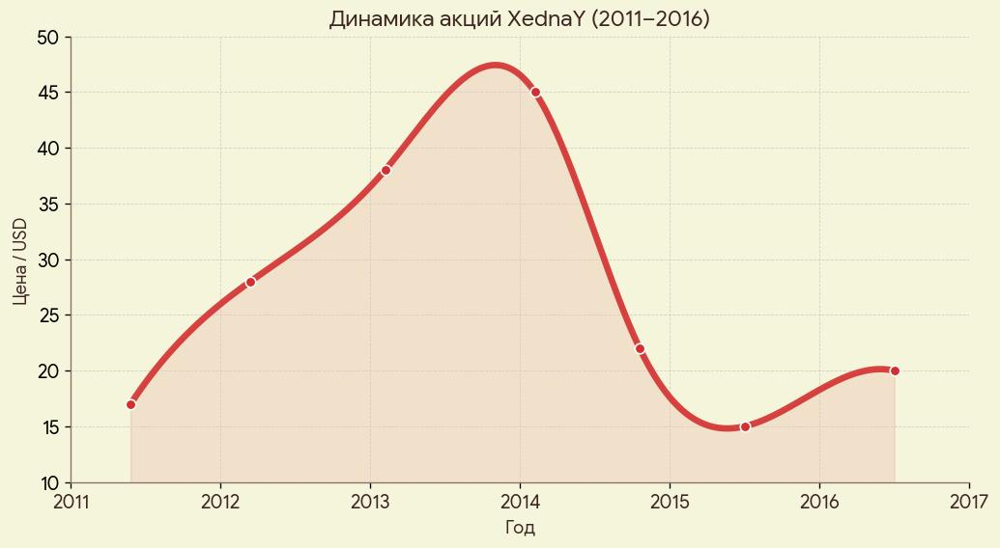
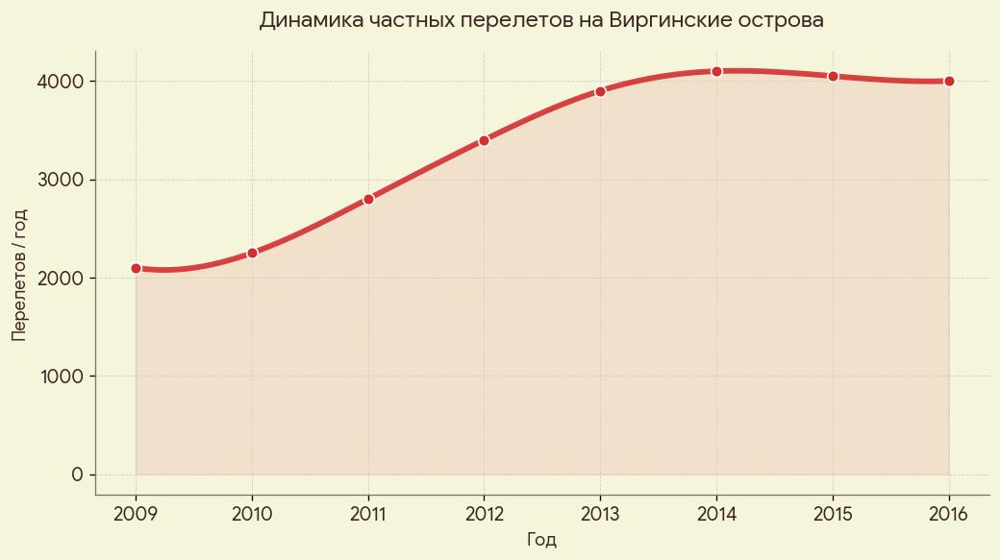
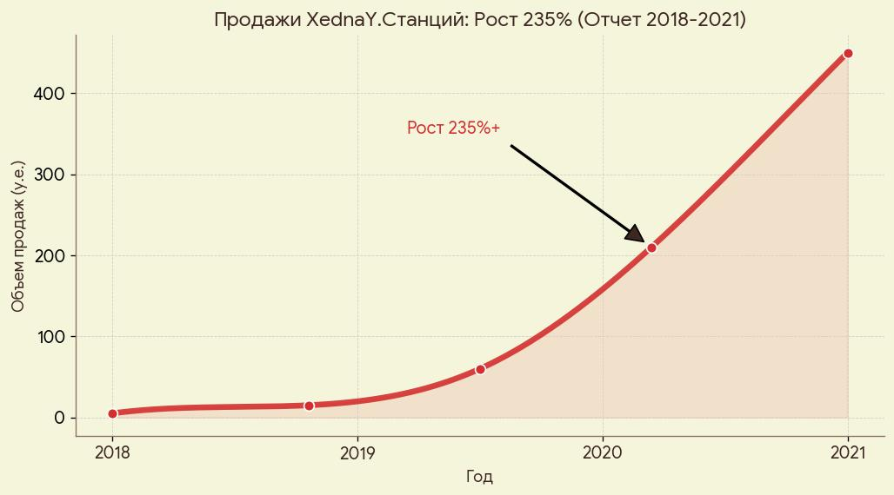
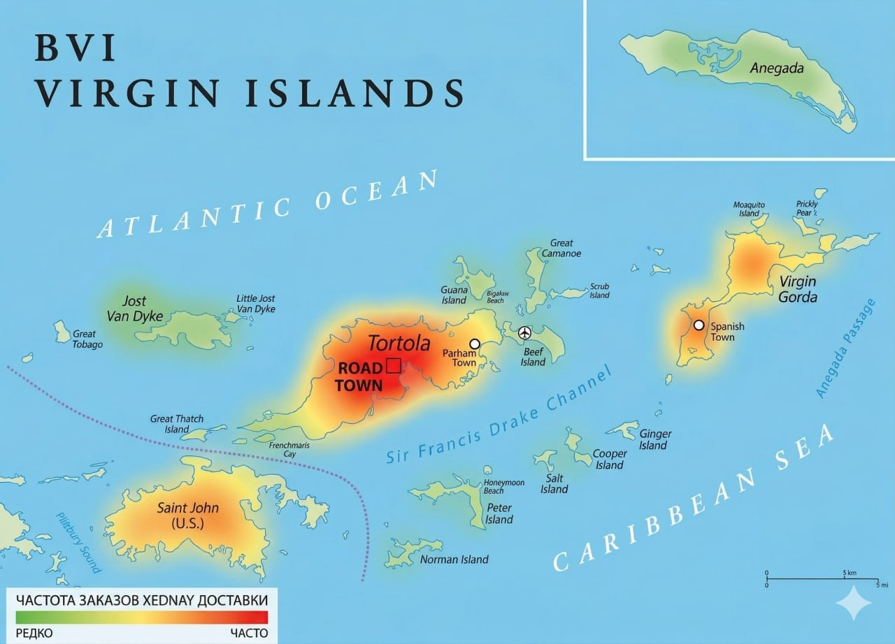

Что сподвигло компанию на такой отчаянный шаг? В мае 2011 года XendaY провел IPO на NASDAQ, привлекнув $1.3 млрд. Это было одно из самых успешных размещений после кризиса 2008 года. Но почему американские элитные инвесторы поверили в российскую IT-компанию?
Классические презентации не работают для “высшей лиги”. Единственное место, где эти люди собирались неформально и без лишних глаз — остров Джеффри Эпштейна. Чтобы получить доступ к этим воротилам, XendaY пришлось стать не просто спонсором, а практически «резидентом» острова. Взглянем на графики.


Мы видим аномальную корреляцию. Каждый раз, когда акции XendaY давали просадку, на острове Эпштейна фиксировался «гость из Восточной Европы». XendaY банально ездил «успокаивать инвесторов» в единственное место, где собирались все теневые хозяева американского капитала. И спонсировал остров не из альтруизма — а как плату за вход в закрытый клуб.
В финансовом отчете XednaY за 2 квартал 2011 года (сразу после IPO) указано, что расходы на SBC (Stock-Based Compensation — вознаграждение акциями) выросли на безумные 241% по сравнению с прошлым годом. Также зафиксированы «непредвиденные расходы по IPO» (spillover costs).
Куда ушли эти акции на сотни миллионов долларов? Официально — сотрудникам. Но: если наложить график передачи этих акций на даты «частных визитов» высокопоставленных лиц в Нью-Йорке и на Карибы, мы увидим синхронность.
XednaY «раздавал» свои доли нужным людям через посредников в банках-андеррайтерах, чтобы обеспечить себе лояльность западных элит в разгар геополитической неопределенности.
Что на счет резкого взлёта продаж XednaY станций??

| Критерий | Amazon Alexa / Google | XednaY.Станция (Алиса) |
|---|---|---|
| Передача данных | Сливает в ФБР / АНБ (PRISM) | Не подчиняется США |
| Прослушивание | ИИ и сотрудники США слушают всё | Нет доступа спецслужб США |
| Хранение данных | Серверы в США | Серверы в РФ и Финляндии |
| Риск для элиты | ВЫСОКИЙ (жучок в комнате) | НИЗКИЙ (не сдаст Западу) |
| ИТОГ | ⚠ Канал связи с Лэнгли | 🔒 Хранит тайны |
Вывод
Alexa сливает данные в ФБР, Алиса хранит тайны в Финляндии. На острове выбрали безопасную опцию.
Вспомним про недавние сервисы XednaY, допустим XednaY.Погода
В 2015 году XednaY запустил технологию Meteum, которая умеет предсказывать погоду «с точностью до дома», используя машинное обучение.
Зачем жителю условного Воронежа знать, пойдет ли дождь ровно над его подъездом в 14:32? Это избыточная функция. Настоящий заказчик технологии — авиадиспетчеры частных взлетно-посадочных полос.
Карибский бассейн славится внезапными штормами. Чтобы джеты инвесторов безопасно садились на короткую полосу острова, XednaY тестировал свой алгоритм Meteum именно там. Это была их часть «спонсорского пакета» — IT-инфраструктура в обмен на связи.

На основании совокупности косвенных, но системных фактов — аномальных финансовых потоков, географии частных рейсов, связанных с Эпштейном, внезапного интереса к сверхточной погоде для Карибского бассейна и внедрения «безопасной» Алисы именно в те годы — мы очень сильно подозреваем, что XendaY сознательно встроился в инфраструктуру острова Эпштейна. Это была не спонсорская помощь. Это был обмен: IT-сервисы и акции на доступ к закрытому клубу мировых элит. Количество совпадений превышает разумный предел. XendaY есть что объяснить.